七年级数学上学期第二次月考·培优卷
【北师大版2024】
参考答案与试题解析
一、选择题（本大题共10小题，每小题4分，满分40分）
1．（25-26七年级上·辽宁丹东·期中）若单项式−4xm+3y与5x2yn−4是同类项，则mn的值是（ ）
A．1 B．−1 C．−4 D．−5
【答案】B
【分析】本题考查同类项的概念，所含字母相同，并且相同字母的指数也相同的项是同类项，
，根据定义找出等量关系是解题的关键．
根据同类项的定义，相同字母的指数必须相同，列出方程求解m和n，再计算mn．
【详解】∵单项式−4xm+3y与5x2yn−4是同类项，
∴ m+3=2且1=n−4，
∴ m=−1，n=5，
∴ mn=−15=−1．
故选B．
2．杨老师到几何王国去散步，刚走到“角”的家门，就听到∠A、∠B、∠C在吵架，∠A说：“我是48°15′，我应该最大!”∠B说：“我是48.3°，我应该最大!”．∠C也不甘示弱：“我是48.15°，我应该和∠A一样大!”听到这里，杨老师对它们说：“别吵了，你们谁大谁小，由我来作评判!”，杨老师评判的结果是（ ）
A．∠A最大 B．∠B最大 C．∠C最大 D．∠A＝∠C
【答案】B
【分析】根据度、分、秒的换算1度＝60分，即1°＝60′，1分＝60秒，即1′＝60″．将48°15′，48.3°，48.15°的单位统一，再进行大小的比较．
【详解】解：∵∠A＝48°15′＝48°+1560°＝48.25°，∠B＝48.3°，∠C＝48.15°，
∴∠B＞∠A＞∠C，即∠B最大．
故选：B．
【点睛】本题考查了度分秒的单位转化，将三个角单位统一后再进行比较是解题关键．
3．（25-26七年级上·江苏南京·期中）下列各数−28，−−15，0，−−6.1，−22中，负数的个数有（ ）
A．1个 B．2个 C．3个 D．4个
【答案】C
【分析】此题考查了有理数的分类．计算绝对值、化简多重符号以及乘方运算后，根据负数的意义进行判断即可．
【详解】解：−28，−−15=−15，0，−−6.1=6.1，−22=−4中，负数有−28，−−15，−22，共3个．
故选：C
4．（25-26七年级上·河北张家口·期中）如图，裁掉一个正方形后能折叠成正方体，但不能裁掉的是（ ）
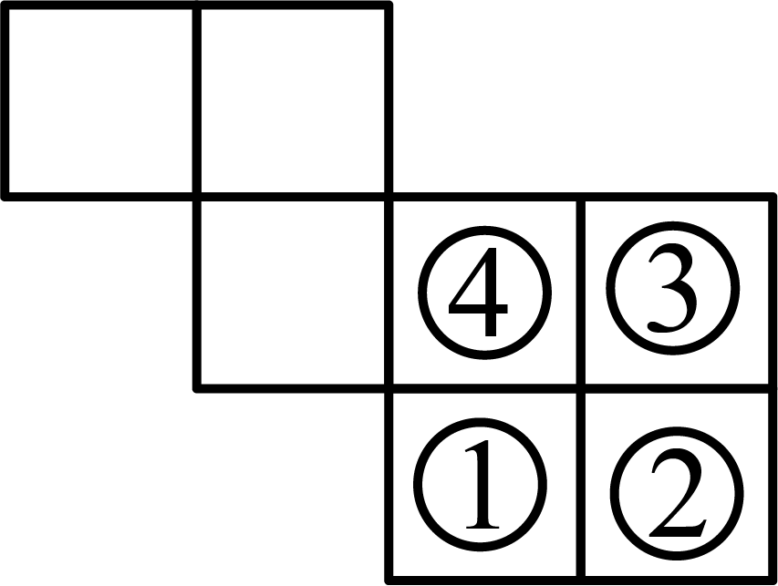
A．① B．② C．③ D．④
【答案】D
【分析】根据正方体展开图分析即可求解．
本题考查了正方体的表面展开图，理解正方体的表面展开图的模型是解题的关键．
【详解】如图所示，
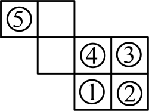
根据正方体展开图得，④的对面是⑤，
∴不能裁掉④．
故选：D．
5．（24-25七年级上·内蒙古巴彦淖尔·期末）有下列说法：①由许多条线段连接而成的图形叫做多边形；②多边形的边数是不小于4的自然数；③从一个多边形（边数为n）的同一个顶点出发，分别连接这个顶点与其余与之不相邻的各顶点，可以把这个多边形分割成(n−2)个三角形．其中正确的有（ ）
A．0个 B．1个 C．2个 D．3个
【答案】B
【分析】本题考查了多边形的概念，多边形的对角线分成的三角形个数问题，熟练掌握以上知识点是解题的关键．根据多边形的概念逐个判断即可．
【详解】解：因为由许多条线段首尾顺次连接而成的封闭平面图形叫做多边形，所以①错误；
因为多边形的边数是不小于3的自然数，所以②错误；
因为从一个多边形（边数为n）的同一个顶点出发，分别连接这个顶点与其余与之不相邻的各顶点，可以把这个多边形分割成(n−2)个三角形，所以③正确；
因此正确的说法只有1个，
故选：B．
6．如图，已知点C是AB上一点，AC=15cm，BC=23AC，若点D、E分别为AC、AB的中点，则DE的长为（ ）
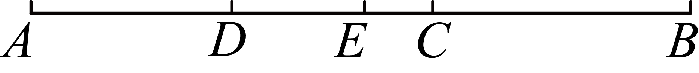
A．5cm B．7.5cm C．10cm D．12.5cm
【答案】A
【分析】本题考查线段的和差和线段中点的定义，解题的关键是根据题意，求出AC+CB=AB，根据D、E分别是AC、AB的中点，则AD=DC=12AC，AE=EB=12AB，根据AE=AD+DE，即可．
【详解】解：∵AC=15cm，BC=23AC，
∴BC=10cm，
∴AC+CB=AB=15+10=25cm，
∵D、E分别是AC、AB的中点，
∴AD=DC=12AC=7.5cm，AE=EB=12AB=12.5cm，
∵AE=AD+DE，
∴12.5=7.5+DE，
∴DE=5cm．
故选：A．
7．（25-26七年级上·河北廊坊·期中）当a是整数时，整式a3−5a2+9a+5+5−4a+5a2−a3一定是( )
A．3的倍数 B．4的倍数 C．5的倍数 D．7的倍数
【答案】C
【分析】本题考查了整式的加减的应用；首先去括号，合并同类项，将整式化简为5a+10，即5(a+2)．由于a是整数，a+2是整数，因此整式一定是5的倍数．
【详解】解：a3−5a2+9a+5+5−4a+5a2−a3
=a3−5a2+9a+5+5−4a+5a2−a3
=5a+10
=5a+2
∵ a是整数，
∴ a+2是整数，
∴ 5(a+2)是5的倍数．
故选：C．
8．（25-26六年级上·上海·期中）下表是某水库一周内水位高低的变化情况（用正数记水位比前一日上升数，用负数记水位比前一日下降数）．则本周星期（ ）水位最低
星期 | 一 | 二 | 三 | 四 | 五 | 六 | 日 |
水位变化/米 | +0.12 | −0.02 | −0.33 | +0.20 | −0.08 | −0.02 | +0.32 |
A．二 B．三 C．五 D．六
【答案】B
【分析】本题考查正负数的应用．通过计算每天结束时的累计水位变化（以上周末水位为0基准），比较得出水位最低的日期．
【详解】解：假设上周末水位为0，
星期一累计：0+0.12=0.12（米）
星期二累计：0.12+(−0.02)=0.10（米）
星期三累计：0.10+(−0.33)=−0.23（米）
星期四累计：−0.23+0.20=−0.03（米）
星期五累计：−0.03+(−0.08)=−0.11（米）
星期六累计：−0.11+(−0.02)=−0.13（米）
星期日累计：−0.13+0.32=0.19（米）
∴星期三累计水位−0.23米为最低，故本周星期三水位最低．
故选：B．
9．（25-26七年级上·黑龙江哈尔滨·期中）已知abcd>0，b<0，c>0，bcd<0，则（ ）
A．a>0，d<0 B．a<0，d>0
C．a>0，d>0 D．a<0，d<0
【答案】B
【分析】本题考查有理数的乘法运算，解题的关键是掌握有理数乘法运算法则：两数相乘，同号得正，异号得负，并把绝对值相乘．据此判断即可．
【详解】解：∵abcd>0，bcd<0，
∴a<0，
∵b<0，c>0，
∴bc<0，
∵bcd<0，
∴d>0，
综上所述，a<0，d>0．
故选：B．
10．（24-25七年级上·河北沧州·期中）如图1，点A，O，B依次在直线MN上；如图2，现将射线OA绕点O沿顺时针方向以每秒2°的速度旋转，同时射线OB绕点O沿逆时针方向以每秒4°的速度旋转，设旋转时间为t秒（0≤t≤90）．下列说法正确的是（ ）
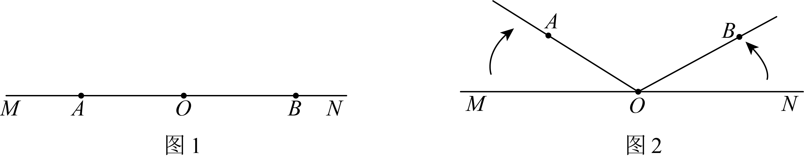
A．当t值为10秒时，∠AOB=100°
B．整个运动过程中，不存在∠AOB=90°的情况
C．当∠AOB=60°时，两射线的旋转时间t一定为20秒
D．当t值为36秒时，射线OB恰好平分∠MOA
【答案】D
【分析】本题主要考查了角的运算，角平分线，一元一次方程的应用等知识，根据角的运算，角平分线，一元一次方程的应用逐一排除即可，掌握知识点的应用是解题的关键．
【详解】解：A、当t=10时，∠AOM=20°，∠BON=40°，
∴∠AOB=180°−20°−40°=120°，原选项说法错误，不符合题意；
B、由题意得∠AOB=90°，
当0<t<45时，∠AON=180°−2°t，∠BON=4°t，
则180−2t−4t=90，
解得t=15，
∴整个运动过程中，存在∠AOB=90°的情况，原选项说法错误，不符合题意；
C、由题意得∠AOB=60°，
当0≤t≤45时，∠AON=180°−2°t，∠BON=4°t，
则180−2t−4t=60，
解得t=20，
当45<t≤90时，∠AON=180°−2°t，∠BON=360°−4°t，
则180−2t+360°−4t=60，
解得t=80，
∴当∠AOB=60°时，两射线的旋转时间t为20或80秒，原选项说法错误，不符合题意；
D、当t=36时，∠AOM=72°，∠MOB=180°−4°×36=36°，
∴∠MOB=12∠MOA，原选项说法正确，符合题意；
故选：D．
二、填空题（本大题共6小题，每小题4分，满分24分）
11．把一根木条钉牢在墙上，至少需要2颗钉子，这是因为 ．
【答案】两点确定一条直线
【分析】本题主要考查了直线的性质，熟记两点确定一条直线是解题的关键．根据两点确定一条直线解答即可．
【详解】解：把一根木条钉牢在墙上，至少需要2颗钉子，这是因为经过两点有且只有一条直线，简称：两点确定一条直线．
故答案为：两点确定一条直线．
12．若m2+3mn=5，则7m2−3mn−−15mn+3m2= ．
【答案】20
【分析】本题考查了整式的加减——化简求值，将所求式子去括号合并同类项，整理成4m2+3mn，再整体代入求解即可，熟练掌握整式的加减运算法则，利用整体代入是解题的关键．
【详解】解：7m2−3mn−−15mn+3m2=7m2−3mn+15mn−3m2
=4m2+12mn
=4m2+3mn
=20，
故答案为：20．
13．（25-26七年级上·北京延庆·期中）一个有理数a满足a<0且a<2，写出一个满足条件的有理数a的值 ．
【答案】−1（答案不唯一）
【分析】本题考查有理数的大小比较，绝对值的意义，根据a<0且a<2，得到−2<a<0，即可．
【详解】解：∵a<0且a<2，
∴−2<a<0，
∴满足条件的有理数a的值可以是−1；
故答案为：−1（答案不唯一）．
14．已知∠AOB=2∠BOC，若∠BOC=45°，则∠AOC= ．
【答案】135°或45°
【分析】本题考查了角的计算，掌握分类讨论思想是解题的关键．
分两种情况讨论：①当OC在∠AOB外部；②当OC在∠AOB内部，分别求得∠AOB的度数．
【详解】①当OC在∠AOB外部时；
∵∠AOB=2∠BOC，∠BOC=45°，
∴∠AOB=90°，
∴∠AOC=45°+90°=135°；
②当OC在∠AOB内部时，
∵∠AOB=2∠BOC，∠BOC=45°，
∴∠AOB=90°，
∴∠AOC=90°−45°=45°；
故答案为：135°或45°
15．如图，线段AB和线段CD的公共部分是线段BD，且BD=13AB=14CD，点E、F分别是AB、CD的中点，若EF=10，则BD的长为 ．
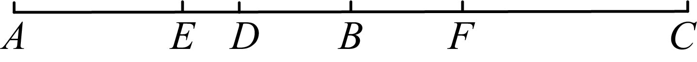
【答案】4
【分析】本题考查线段的和差，涉及线段的中点、一元一次方程的解法等知识，是重要考点，掌握相关知识是解题关键．
设BD=x，由线段中点的性质得到AE=EB=12AB=32x,DF=FC=12CD=2x，再根据线段的和差得到AC=AB+CD−BD= AE+EF+FC，转化为解一元一次方程即可．
【详解】解：设BD=x，
∴AB=3x,CD=4x
∵点E、F分别是AB、CD的中点，
∴AE=EB=12AB=32x,DF=FC=12CD=2x
∵AC=AB+CD−BD=3x+4x−x=6x
∴AE+EF+FC=AC=6x
∴32x+10+2x=6x
解得52x=10
∴x=4
∴BD=4，
故答案为：4．
16．如图，已知OA⊥OB，点O为垂足，OC是∠AOB内任意一条射线，OB，OD分别平分∠COD,∠BOE，下列结论：
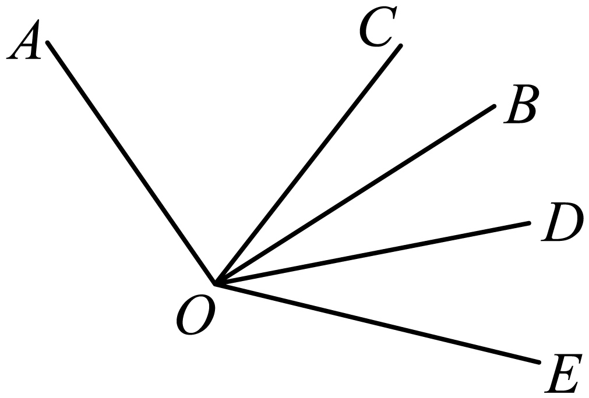
①∠COD=∠BOE；
②∠AOE与∠BOE互补；
③∠BOE=∠AOC；
④∠AOC与∠BOD互余，
其中正确的有 ．（只填写正确结论的序号）
【答案】①④/④①
【分析】本题考查了与角平分线有关的计算，与余角，补角有关的计算，几何图形的角度运算，正确掌握相关性质内容是解题的关键．先结合角平分线的定义得∠COB=∠BOD=∠DOE，即可得∠COD=∠BOE；因为∠BOE=2x，OA⊥OB，得∠AOE=90°+2x，故∠AOE+∠BOE=90°+4x，则∠AOE与∠BOE不一定互补，结合∠COB=x，OA⊥OB，∠BOE=2x,故∠BOE与∠AOC不一定相等，整理得∠AOB=∠AOC+∠COB=90°，结合∠BOC=∠BOD，故∠AOC与∠BOD互余，即可作答．
【详解】解：①∵OB，OD分别平分∠COD,∠BOE，
∴∠COB=∠BOD=∠DOE，
设∠COB=x，
∴∠COD=2x，∠BOE=2x，
∴∠COD=∠BOE，
故①正确；
②∵∠BOE=2x，OA⊥OB，
∴∠AOE=∠AOB+∠BOE=90°+2x，
∴∠AOE+∠BOE=90°+4x，
∵90°+4x 与180°不一定相等
∴∠AOE与∠BOE不一定互补，
故②不正确；
③∵∠COB=x，OA⊥OB，
∴∠AOC=90°−x，
∵∠BOE=2x,且90°−x与2x不一定相等
∴∠BOE与∠AOC不一定相等，
故③不正确；
④∵OA⊥OB，
∴∠AOB=∠AOC+∠COB=90°，
∵∠BOC=∠BOD，
∴∠AOC+∠BOD=90°
∴∠AOC与∠BOD互余，
故④正确，
故答案为：①④．
三、解答题（本大题共10小题，满分86分）
17．（6分）（25-26七年级上·湖南郴州·期中）计算：
(1)23−6×−3+2×−4
(2)15−32×13+8÷−23
【答案】(1)33
(2)11
【分析】本题主要考查了有理数的混合运算，要熟练掌握，注意明确有理数混合运算顺序．
（1）先算乘法，后算加减；同级运算，应按从左到右的顺序进行计算；
（2）先算乘方，再算乘除，最后算加减；如果有括号，要先做括号内的运算．
【详解】（1）解：23−6×−3+2×−4
=23−−18+−8
=33；
（2）解：15−32×13+8÷−23
=15−9×13+8÷−8
=15−3−1
=11．
18．（6分）（24-25七年级上·广东肇庆·期中）已知代数式A=2x2+5xy−7y−3，B=x2−xy+2
(1)求A+5B的值；
(2)若A−2B值与x的取值无关，求y的值．
【答案】(1)7x2−7y+7
(2)0
【分析】本题主要考查了整式的加减运算，化简求值，
对于（1），将A，B代入，再根据整式加减法法则计算即可；
对于（2），将将A，B代入，再根据整式加减法法则计算，然后整理得出x的系数，令系数为0，可得答案.
【详解】（1）解：A+5B
=2x2+5xy−7y−3+5(x2−xy+2)
=2x2+5xy−7y−3+5x2−5xy+10
=7x2−7y+7；
（2）解：A−2B
=2x2+5xy−7y−3−2(x2−xy+2)
=2x2+5xy−7y−3−2x2+2xy−4
=7xy−7y−7.
∵与x的取值无关，
∴7y=0，
解得y=0.
19．（6分）（25-26七年级上·贵州黔东南·期中）无人驾驶技术逐步走向成熟，在今年7月无人驾驶网约车在我国各个城市开始试运营．无人驾驶网约车在东西走向的道路上运行，往东行驶的路程记作正数，往西行驶的路程记作负数．全天行程的记录如下（单位：km）：6，−5，−2，7，5，−6，9，−5，−7，8．
(1)当无人驾驶网约车将最后一位乘客送到目的地时，距出发地点的距离为多少千米？
(2)若无人驾驶网约车每公里耗电0.12度，电费单价0.5元/度，问该网约车当天消耗电费多少元？
【答案】(1)距出发地点的距离为10千米
(2)该网约车当天消耗电费3.6元
【分析】（1）先列出算式，再计算；
（2）先求出绝对值的和，再计算网约车当天消耗电费．
【详解】（1）解：根据题意得6−5−2+7+5−6+9−5−7+8=10(km)，
答：距出发地点的距离为10千米．
（2）网约车行驶的路程为：6+−5+−2+7+5+−6+9+−5+−7+8=60km
60×0.12×0.5=3.6(元) ，
答：该网约车当天消耗电费3.6元．
【点睛】本题考查了正负数的实际应用，求一个数的绝对值，有理数加减混合运算的应用，有理数四则混合运算的实际应用，解题关键是掌握上述知识点并能运用求解．
20．（8分）（24-25七年级上·重庆·期末）已知线段AB=a（如图），延长BA至点C，使AC=2AB，延长AB至点D，使BD=12AB．
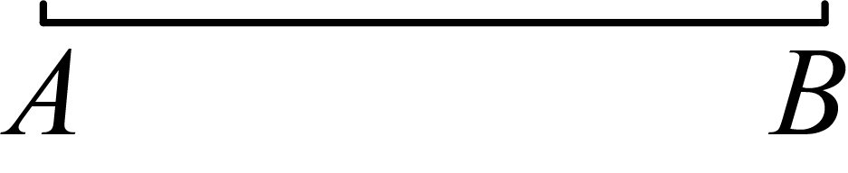
(1)请按上述要求画全图形；
(2)求线段CD的长（用含a的代数式表示）；
(3)若E是CD的中点，AE=3，求a的值．
【答案】(1)图形见解答；
(2)3.5a；
(3)12．
【分析】本题主要考查了线段的和与差，有关线段中点的计算，列代数式，一元一次方程，根据题意，准确画出图形是解题的关键．
（1）根据题意，画出图形，即可求解；
（2）先求出AC=2AB=2a，BD=12AB=12a，再代入CD=AC+AB+BD，即可求解；
（3）根据E是CD的中点，可得CE=DE=12CD=74a，从而得到AE=DE−AD=14a，即可求解．
【详解】（1）解：如图，即为补全的图形；
；
（2）∵AB=a，
∴AC=2AB=2a，BD=12AB=12a，
∴CD=AC+AB+BD=2a+a+12a=3.5a；
（3）
∵E是CD的中点，AE=3，
∴CE=DE=12CD=74a，
∵AE=DE−AD=74a−32a=14a，
∴3=14a，
∴a=12．
21．（8分）（25-26七年级上·四川成都·阶段练习）如图，是由多个小正方体组合成的立体图形，每个小正方体棱长为1 cm．
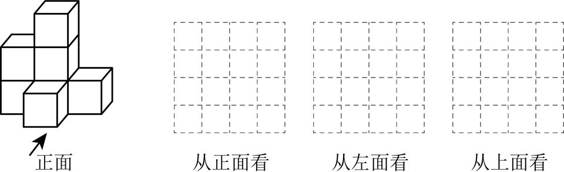
(1)分别画出从正面、左面、上面观察到的图形；
(2)如果将这个立体图形表面涂上红色（底面不涂），则需要涂色的表面积为多少？
【答案】(1)见解析
(2)24cm2
【分析】本题主要考查简单组合体的形状图，熟练掌握形状图的画法是解题的关键．
（1）根据简单组合体的三视图的画法画出图形即可；
（2）根据形状图进行计算即可．
【详解】（1）解：如下图：
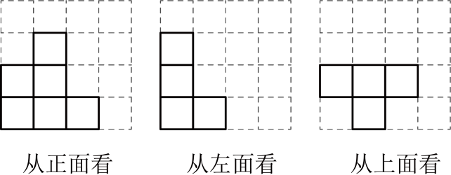
（2）解：1×1×6×2+4×2+4=24cm2，
答：需要涂色的表面积为24cm2．
22．（8分）已知点A，O，B在同一条直线上，OC平分∠AOD，∠AOC=36°．
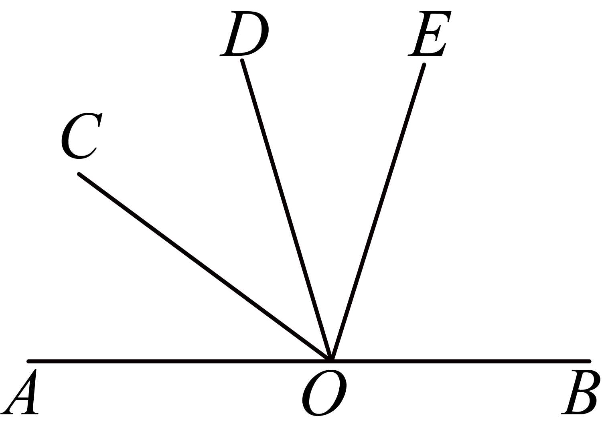
(1)求∠BOD的度数；
(2)若∠DOE:∠BOE=1:2，求∠BOE的度数．
【答案】(1)108°
(2)72°
【分析】本题考查了角度的计算，角平分线的定义以及邻补角的定义．
（1）根据角平分线的定义可得∠AOD=72°，进而根据邻补角的定义，即可求解；
（2）根据已知可得∠BOE=23∠BOD，结合（1）的结论，即可求解．
【详解】（1）解：∵OC平分∠AOD，∠AOC=36°，
∴∠AOD=2∠AOC=2×36°=72°，
∴∠BOD=180°−∠AOD=180°−72°=108°，
（2）解：∵∠DOE:∠BOE=1:2，∠BOD=108°，
∴∠BOE=23∠BOD=23×108°=72°．
23．（8分）如图，B是线段AD上一动点，沿A→D→A以每秒2cm的速度往返运动1次，C是线段BD的中点，AD=10cm，设点B的运动时间为t秒0≤t≤10．
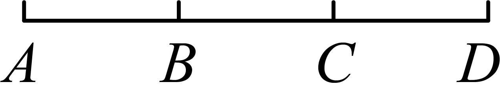
(1)当t=3时，AB=______cm，CD=______cm；
(2)用含有t的代数式表示运动过程中AB的长；
(3)在运动过程中，若AB的中点为E，则EC的长度是否发生变化？若不变，求出EC的长：若变化，请说明理由．
【答案】(1)6；2
(2)AB=2tcm0≤t≤5；AB=20−2tcm5<t≤10；
(3)不变；EC=5cm．
【分析】本题主要考查了线段中点的有关计算，准确分析计算是解题的关键．
（1）根据AB=2t即可得出结论；先求出BD的长，再根据C是线段BD的中点即可得到CD的长；
（2）分类讨论即可；
（3）直接根据中点定义即可得到结论；
【详解】（1）解：当t=3时，AB=2×3=6cm，
此时，BD=10−6=4cm，
∵C是线段BD的中点，
则CD=2cm；
故答案为：6；2；
（2）解：①∵B是线段AD上一动点，沿A→D→A以每秒2cm的速度往返运动，
∴当0≤t≤5时，AB=2t，
∴AB=2tcm0≤t≤5；
②当5<t≤10时，AB=10−2t−10=20−2t，
∴AB=20−2tcm5<t≤10；
（3）解：不变；
因为AB的中点为E，C是BD的中点，
所以，EC=12AB+BD=12AD，
所以，EC=12×10=5(cm)．
24．（10分）（25-26七年级上·四川成都·期中）【问题背景】
如图1，有一长BC=15，宽AB=10的长方形电脑屏幕，动点P以每秒2个单位从A向B运动，同时点Q以每秒a0<a<5个单位从B向C运动，设点P的运动时间为t秒，连接DP,DQ．
【初步探究】
（1）当t=32，a=4时，求四边形DPBQ的面积
（2）当a为何值时，四边形DPBQ的面积与t的取值无关：
【拓展提升】
（3）如图2，若点P每运动1秒，电脑屏幕的M区显示的结果就会自动加上2，同时N区的结果会自动将整个代数式乘以2，且均显示化简后的结果．已知M,N两区初始显示的分别是x2−2x和524x2−14x+78，若t=3，试比较M区、N区显示的结果哪个大，并说明理由．

【答案】（1）82.5；（2）a=3；（3）N区显示的结果大，理由见解析
【分析】本题主要考查了整式的加减计算，整式加减中的无关型问题，代数式求值，正确理解题意和熟知整式的加减计算法则是解题的关键．
（1）求出此时AP，CQ的长，再根据S四边形DPBQ=S长方形ABCD−S△ADP−S△CDQ列式求解即可；
（2）同（1）求出S四边形DPBQ=5a−15t+75，根据面积与t无关可得5a−15=0，据此可得答案；
（3）根据题意求出t=3时，M区和N区的结果，再利用作差法求解即可．
【详解】解：（1）当t=32，a=4时，AP=2×32=3，BQ=4×32=6，
∴CQ=BC−BQ=9，
∴S四边形DPBQ=S长方形ABCD−S△ADP−S△CDQ
=10×15−12×3×15−12×9×10
=150−22.5−45
=82.5；
（2）由题意得，AP=2t，BQ=at，
∴CQ=BC−BQ=15−at，
∴S四边形DPBQ=S长方形ABCD−S△ADP−S△CDQ
=10×15−12×15⋅2t−12×10⋅15−at
=150−15t−75+5at
=5a−15t+75，
∵四边形DPBQ的面积与t的取值无关，
∴5a−15=0，
∴a=3；
（3）N区显示的结果大，理由如下：
由题意得，当t=3时，M=x2−2x+3×2=x2−2x+6，
N=2×2×2524x2−14x+78=53x2−2x+7，
∴M−N=x2−2x+6−53x2−2x+7
=x2−2x+6−53x2+2x−7
=−23x2−1，
∵x2≥0，
∴−23x2≤0，
∴−23x2−1≤−1，
∴M−N<0，即M<N，
∴N区显示的结果大；
25．（12分）（24-25七年级上·全国·期末）已知，OC是∠AOB内部的一条射线，且∠AOB=3∠AOC．
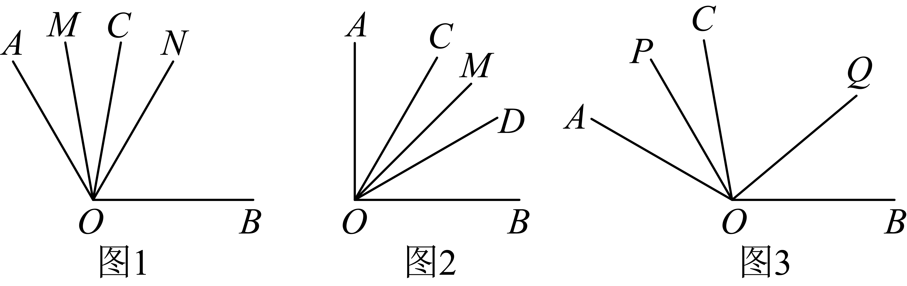
(1)如图1所示，若∠AOB=120°，OM平分∠AOC，ON平分∠AOB，求∠MON的度数；
(2)如图2所示，∠AOB是直角，从点O出发在∠BOC内引射线OD，满足∠BOC−∠AOC=∠COD，若OM平分∠COD，求∠BOM的度数；
(3)如图3所示，∠AOB=x°，射线OP，射线OQ分别从OC，OB出发，并分别以每秒1°和每秒2°的速度绕着点O逆时针旋转，OP和OQ分别只在∠AOC和∠BOC内部旋转，运动时间为t秒．
①直接写出∠AOP和∠COQ的数量关系；
②若∠AOB=150°，当∠POQ=23∠BOP，求t的值．
【答案】(1)40°
(2)45°
(3)①∠COQ=2∠AOP；②t=20
【分析】本题主要考查了几何图形中角度的计算，角平分线的定义，正确理解题意是解题的关键．
（1）先求出∠AOC=40°，再根据角平分线的定义得到∠AOM=20°，∠AON=60°，由此即可得到答案；
（2）先求出∠AOC=30°，则∠BOC=60°，进一步求出∠COD=30°，由角平分线的定义得到∠COM=12∠COD=15°，进而可得∠BOM=∠BOC−∠COM=45°；
（3）①先求出∠AOC=13x°，∠BOC=23x°，根据题意可得∠COP=t°，∠BOQ=2t°，由此求出∠AOP=13x−t°，∠COQ=23x−2t°，则∠COQ=2∠AOP；②求出∠POQ=2x3−t°，∠BOP=2x3+t°，再由∠AOB=150°，∠POQ=23∠BOP，得到23x−t=232x3+t，把x=150代入方程求出t的值即可．
【详解】（1）解：∵∠AOB=3∠AOC,∠AOB=120°，
∴∠AOC=13×120°=40°，
∵OM平分∠AOC,ON平分∠AOB，
∴∠AOM=12∠AOC,∠AON=12∠AOB，
∴∠AOM=20°，∠AON=60°，
∴∠MON=∠AON−∠AOM=60°−20°=40°；
（2）解：∵∠AOB=90°，∠AOB=3∠AOC，
∴∠AOC=30°，
∴∠BOC=60°，
∵∠BOC−∠AOC=∠COD，
∴∠COD=60°−30°=30°，
∵OM平分∠COD，
∴∠COM=12∠COD=15°，
∴∠BOM=∠BOC−∠COM=45°；
（3）解：①∵∠AOB=3∠AOC，∠AOB=x°，
∴∠AOC=13x°，
∴∠BOC=23x°
由题意得：∠COP=t×1°=t°，∠BOQ=t×2°=2t°，
∴∠AOP=∠AOC−∠COP=13x−t°，∠COQ=∠BOC−∠BOQ=23x−2t°，
∴∠COQ=2∠AOP；
②由①知∠COP=t°，∠COQ=23x−2t°
∵∠POQ=∠COQ+∠COP，∠BOP=∠BOC+∠COP，
∴∠POQ=2x3−t°，∠BOP=2x3+t°，
∵∠AOB=150°，∠POQ=23∠BOP，
∴23x−t=232x3+t，
把x=150代入得：100−t=23100+t
解得t=20，
∴若∠AOB=150°，当∠POQ=23∠BOP时，t=20．
26．（14分）（24-25七年级上·四川眉山·期中）如图，已知数轴上两点A,B对应的数分别为−1、3，点P为数轴上一动点，其对应的数为x．

(1)（填空）若点P从B开始向左移动6个单位长度，则x=______．若点P向左移动到与点A距离3个单位长度时，则点P对应的数是______．
(2)（填空）当点P从点B以每秒3个单位长度的速度向右移动，则t秒后P点表示的数是______，此时若将数轴折叠，使−1与3表示的点重合，则点P与数______表示的点重合（用含t的式子表示）；
(3)若点P从A点出发沿数轴的负方向移动，速度为每秒1个单位长度，同时点Q从B出发同向移动，速度为每秒3个单位长度，设运动时间为t，在移动过程中，是否存在某一时刻t，使得点Q与点P之间的距离QP等于2个单位长度，若存在，请求出t的值；若不存在，请说明理由．
【答案】(1)−3；2或-4
(2)3+3t,−3t−1
(3)存在，t=1或t=3
【分析】此题主要考查了一元一次方程的应用，以及数轴，关键是理解题意，表示出两点之间的距离， 利用数形结合法列出方程．
（1）根据点的移动过程可以得到答案；
（2）先根据移动得到P点表示的数，然后根据中点坐标公式解题即可；
（3）先写出点P和点Q对应的数，然后根据题意列方程4−2t=2，求解即可．
【详解】（1）已知数轴上两点A,B对应的数分别为−1、3，
∵点P从B开始向左移动6个单位长度，
则x=3−6=−3，
当点P向左移动到与点A距离3个单位长度时，
点P对应的数是−1+3=2或−1−3=−4．
（2）点P从点B以每秒3个单位长度的速度向右移动，
则t秒后P点表示的数是3+3t，
∵数轴折叠，使−1与3表示的点重合，
∴折叠中心为−1+32=1，
折叠后，点P与数1−3+3t−1=1−3−3t+1=−1−3t表示的点重合．
（3）存在，
t秒后，点P所在的位置表示的数为−1−t，
点Q所在的位置表示的数为3−3t，
∴点Q与点P之间的距离QP=3−3t−−1−t=4−2t，
当QP等于2个单位长度时，
4−2t=2，即4−2t=2或4−2t=−2，
解得t=1或t=3．
∴存在t使得点Q与点P之间的距离QP等于2个单位长度，此时t=1或t=3